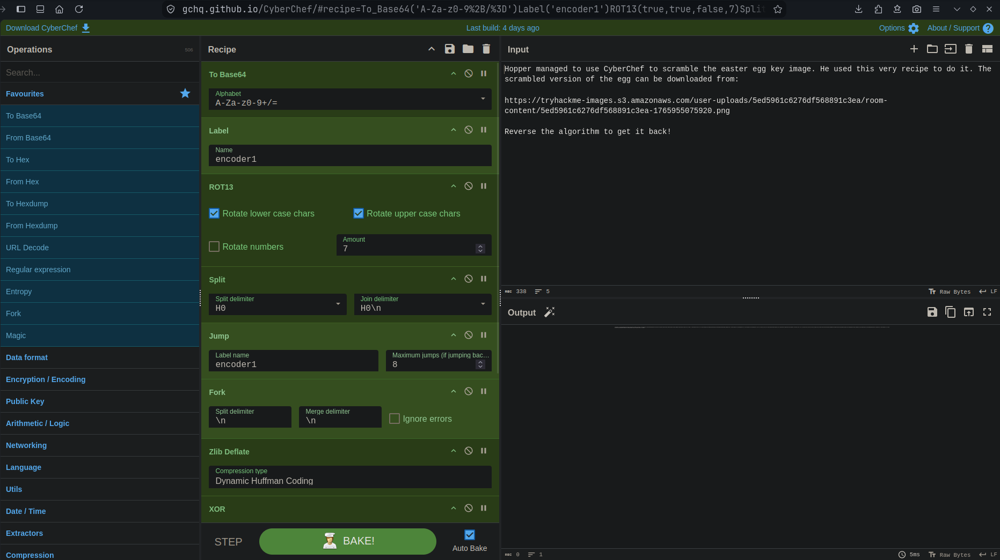
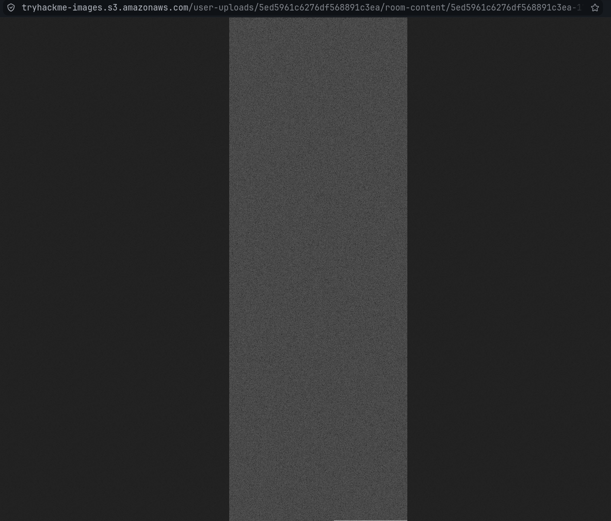
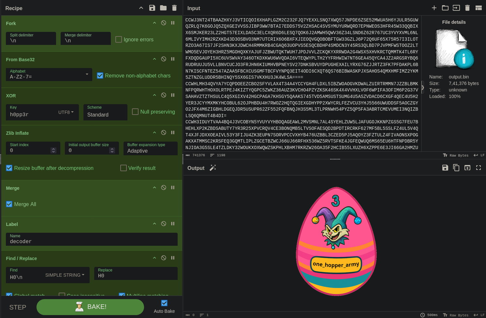
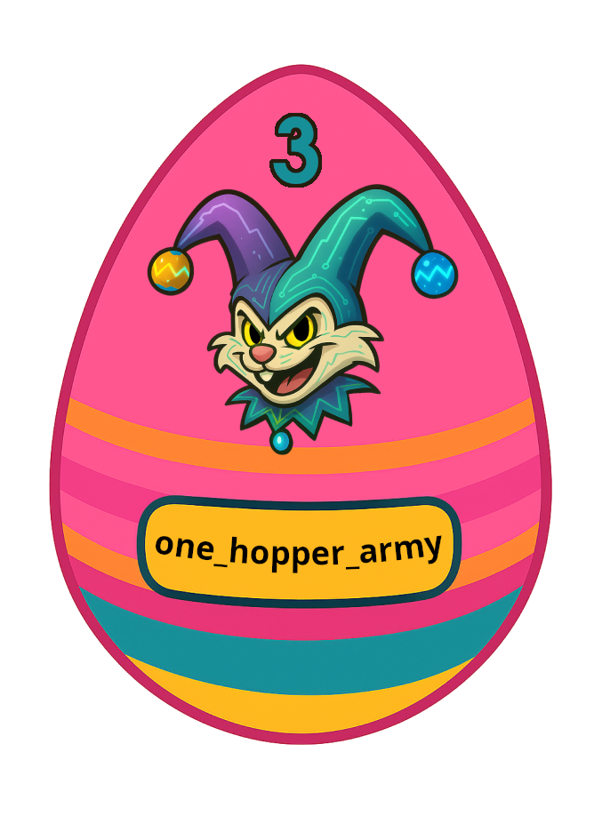

~/Work/THM/Advent-of-Cyber-2025/17-CyberChef-Hoperation-Save-McSkidy
❯ python3 -c "from PIL import Image; open('output.bin', 'wb').write(Image.open('5ed5961c6276df568891c3ea-1765955075920.png').convert('L'
).tobytes())"
| Linked file: output.bin |
From_Base32('A-Z2-7=',true)
XOR({'option':'UTF8','string':'h0pp3r'},'Standard',false)
Zlib_Inflate(0,0,'Adaptive',true,false)
Merge(true)
Label('decoder')
Find_/_Replace({'option':'Simple string','string':'H0\\n'},'H0',true,false,true,false)
ROT13(true,true,false,19)
Jump('decoder',8)
From_Base64('A-Za-z0-9+/=',true,false)
Render_Image('Raw')

